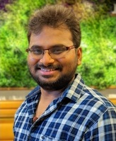

|  |
|
Jothi Prasanna Shanmuga Sundaram
CEO, Luminous Research Laboratories
E-mail: jpsresearchguru@gmail.com
|
Research Interests
My research focuses on understanding the requirements of emerging communication paradigms and leveraging their intrinsic properties to design, optimize, and develop next-generation communication protocols. I am an active contributor to the IEEE P3388 working group, where I support the standardization of performance assessment and measurement methodologies for industrial wireless systems.
In addition to my core research interests, I have expanded my work to support aspiring Indian researchers. I mentor and train students to meet international research standards, helping them secure fully funded PhD admissions at leading universities across the world. I am personally driven to train 10,000 aspiring researchers and mentor them throughout their doctoral journey—supporting them from foundational research development to becoming independent, internationally recognized researchers capable of leading impactful scientific contributions.
Technical Skills
- Languages : C, Python, Go, NodeJS
- Technologies : IEEE 802.11ah, IEEE 802.15.4 and LoRa LPWAN.
- Simulators : NS-3, OPNET, TOSSIM, OverSim P2P Network Simulator.
- Embedded OS : Linux, TinyOS, Custom Kernel Compilation.
- Virtualization Tools : Docker, Vagrant.
- Networking Protocol Development: MAC & upper layers, Channel/Network Coding, AI/ML assisted protocols, P2P Overlay Networking.
- Embedded wireless IoT node bring-up.
- Applied AI/ML for Wireless Communications.
- Applied Blockchain for IoT Applications.
Education and experience
- 2025/08 - now:
- CEO, Luminous Research Laboratories, India.
Leading research on wireless intelligence and blockchain integration for industrial applications.
- Member, Working Group and Technical SubGroup, IEEE P3388 Standards Association.
Project: Wireless Performance Assessment and Measurement for Industrial Wireless Systems
- 2018/08 - 2025/08:
- PhD Candidate, Electrical Engineering and Computer Science, UC Merced.
- Research and Teaching Assistant, Computer Science and Engineering, UC Merced.
- 2024/05 - 2024/08:
Research Intern, Mitsubishi Electric Research Laboratories, Cambridge, MA, USA.
Project: Blockchain Solutions for Factory Automation
- 2022/05 - 2022/08:
Research Intern , Mitsubishi Electric Research Laboratories, Cambridge, MA, USA.
Project : Advanced Networking Technologies
Contribution : Dynamic Relay Point (DRP) protocol.
Yield : 1 Conference paper (IEEE ISIT 2023) and 1 US Patent filed.
- 2015 - 2017: Master of Technology in Computer Science and Engineering, SRM University, India.
- 2017/02 - 2017/07: Visiting Student/Research Assistant, Nanyang Technological University, Singapore.
- 2011 - 2015: Bachelor of Engineering in Computer Science and Engineering, Anna University, India.
US Patents
- Rateless Erasure Coding for Multi-Hop Broadcast Transmission in Wireless IoT Network
Jianlin Guo, Jothi Prasanna Shanmuga Sundaram, Toshiaki Koike-Akino, Pu Wang, Kieran Parsons, Philip Orlik, Takenori Sumi, and Yukimasa Nagai.
U.S. Patent Application No. 18/124,102, Filed: March 21, 2023 (Pending).
Publications
2018 - now:
- COMNETS: COst-sensitive decision trees approach to throughput optimization for Multi-radio IoT NETworkS
Jothi Prasanna Shanmuga Sundaram, Magzhan Gabidolla, Miguel A. Carreira-Perpinan, Alberto E. Cerpa.
In 30th IEEE ETFA'25.
[pdf]
[Long Version]
- MARS: Multi-radio Architecture with Radio Selection using Decision Trees For Emerging Mesoscale CPS/IoT Applications
Jothi Prasanna Shanmuga Sundaram, Arman Zharmagambetov, Magzhan Gabidolla, Miguel A. Carreira-Perpinan, Alberto E. Cerpa.
In 30th IEEE ETFA'25.
[pdf]
[Long Version]
- Rateless Erasure Coding for Multi-Hop Broadcast Transmission in Wireless IoT Network
Jianlin Guo, Toshiaki Koike-Akino, Pu Wang, Kieran Parsons, Philip Orlik, Jothi Prasanna Shanmuga Sundaram, Takenori Sumi, and Yukimasa Nagai.
In 40th IEEE ISIT'23.
[pdf]
- Poster Abstract: On the feasibility of an IoT Multi-Radio Architecture for Smart Buildings
Jothi Prasanna Shanmuga Sundaram & Alberto E. Cerpa
In 7th ACM BuildSys'20.
[pdf]
[Teaser video]
[Full video]
- A Survey on LoRa Networking: Research Problems, Current Solutions and Open Issues.
Jothi Prasanna Shanmuga Sundaram, Wan Du, Zhiwei Zhao.
IEEE Communications Surveys and Tutorials, October 2019.
[pdf]
- Resilience Bounds of Sensing-Based Network Clock Synchronization.
Rui Tan, Linshan Jiang, Arvind Easwaran, Jothi Prasanna Shanmuga Sundaram.
In 24th IEEE ICPADS'18.
[pdf] [slides]
2016 - 2017:
- Performance Analysis of CREIDO Enhanced Chord Overlay Protocol for Wireless Sensor Networks.
Bhalaji Natarajan, Jothi Prasanna Shanmuga Sundaram, Parthiban Natarajan.
Advances in Intelligent Systems and Computing, Springer, 2017.
[pdf]
- T2WSN: Titivated Two-Tired Chord Overlay Aiding Robustness And Delivery Ratio For Wireless Sensor Networks.
T. Peer Meera Labbai and Jothi Prasanna Shanmuga Sundaram.
Journal of Theoretical and Applied Information Technology, 2016.
[pdf]
- Analysis of Creido Enhanced Chord Overlay Protocol Under Different Movement Models in Delay Tolerant Networks.
Umaparvathi, Bhalaji Natarajan, Jothi Prasanna Shanmuga Sundaram, Parthiban Natarajan.
Wireless Personal Communications, Springer, 2016.
[pdf]
Professional services
- Reviewer, ACM Transactions on Internet of Things.
- Reviewer, IEEE Transactions on Network Science and Engineering.
- Reviewer, IEEE Transactions on Industrial Informatics.
- Reviewer, IEEE Internet of Things Journal.
- Technical Program Committee, Artifact Evaluation, CoNEXT 2025.
- Technical Program Committee, Artifact Evaluation, MobiCom 2025.
- Mentor, Pathway to PhD program, NSF IoT4Ag, 2024.
- Student Volunteer, IPSN 2022.
- Student Volunteer, SenSys/BuildSys 2020.
Awards and honors
- Grad Excel Peer Mentor Award, UC Merced, 2021, 22.
- EECS Bobcat Summer Fellowship, UC Merced, 2019,20,21.
- Master's Merit Scholarship, SRM University, 2015-2017.
- Bachelor's Merit Scholarship, Central Goverment of India, 2011-2015.
|